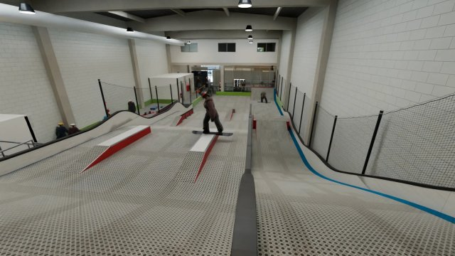
1Montigalà
Badalona · 90/100 programa completo
- Planta
- 14,6 × 40,4 m · 585 m²
- Altura libre
- 7 m
- Pista
- 3 líneas · 27,4 m · salida a 3,45 m
- Alquiler
- 6.472,5 €/mes (7,50 €/m²)
recepción · alquiler · taquillas · vestuarios · gym · lounge · café
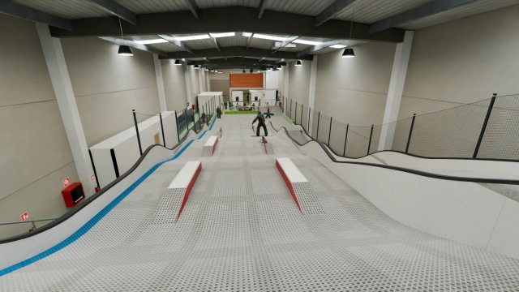
2Abrera · Franklin 3351
Abrera · 85/100 programa completo
- Planta
- 14,0 × 55,0 m · 770 m²
- Altura libre
- 7 m
- Pista
- 3 líneas · 36,4 m · salida a 4,2 m
- Alquiler
- 4.500 €/mes
recepción · alquiler · taquillas · vestuarios · lounge · café
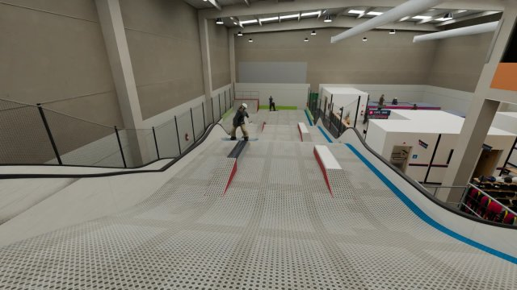
3Can Masachs
Ripollet · 85/100 programa completo
- Planta
- 25,0 × 32,0 m · 800 m²
- Altura libre
- 8,8 m
- Pista
- 3 líneas · 30,8 m · salida a 4,5 m
- Alquiler
- 4.500 €/mes
recepción · alquiler · taquillas · vestuarios · trampolines · lounge · café
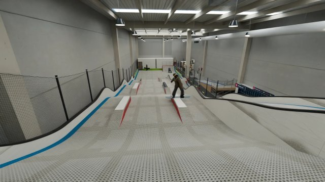
4Santa Perpètua
Santa Perpètua de Mogoda · 85/100 programa completo
- Planta
- 15,6 × 49,6 m · 774 m²
- Altura libre
- 8 m
- Pista
- 3 líneas · 38,1 m · salida a 5 m
- Alquiler
- 6.000 €/mes
recepción · alquiler · taquillas · vestuarios · gym · lounge · café
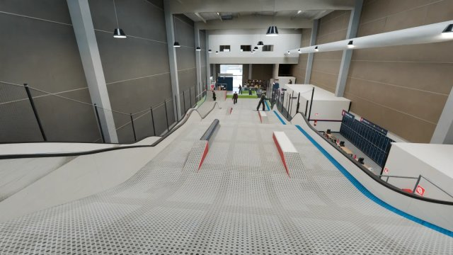
5Can Comelles · Premsa 22
Esparreguera · 80/100 programa completo
- Planta
- 15,8 × 46,4 m · 713 m²
- Altura libre
- 7,4 m
- Pista
- 3 líneas · 32,4 m · salida a 4,5 m
- Alquiler
- 4.864 €/mes
recepción · alquiler · taquillas · vestuarios · trampolines · lounge · café
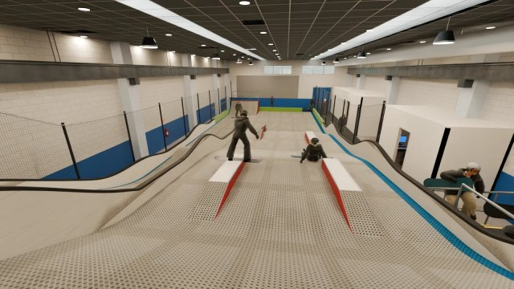
6Molí d’en Bisbe · planta de 782 m²
Montcada i Reixac · 75/100 programa completo
- Planta
- 14,6 × 52,4 m · 765 m²
- Altura libre
- 5,7 m
- Pista
- 3 líneas · 26,9 m · salida a 2,9 m
- Alquiler
- 3.900 €/mes
recepción · alquiler · taquillas · vestuarios · gym · trampolines · lounge
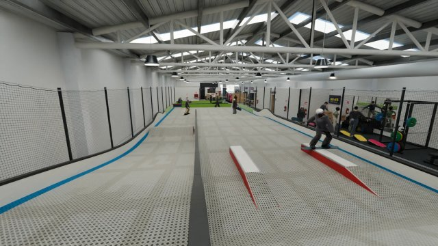
7Serra d’en Pons
Vilassar de Dalt · 75/100 programa completo
- Planta
- 15,6 × 47,8 m · 746 m²
- Altura libre
- 4,2 m
- Pista
- 3 líneas · 28,5 m · salida a 1,4 m
- Alquiler
- 5.325,30 €/mes (Habitaclia redondea a 5.300 €)
recepción · alquiler · taquillas · vestuarios · gym · lounge · café
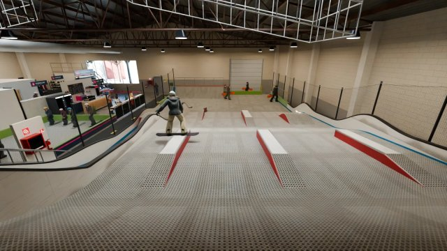
8Can Palet · Masachs
Terrassa · 70/100 programa completo
- Planta
- 29,5 × 28,8 m · 850 m²
- Altura libre
- 6 m
- Pista
- 4 líneas · 26,9 m · salida a 3,2 m
- Alquiler
- 3.000 €/mes (3,53 €/m²)
recepción · alquiler · taquillas · vestuarios · gym · trampolines · lounge · café
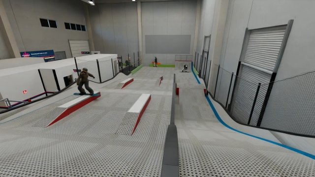
9Corró d’Avall · planta de 537 m²
Les Franqueses del Vallès · 70/100 programa completo
- Planta
- 19,5 × 26,2 m · 512 m²
- Altura libre
- 10,6 m
- Pista
- 3 líneas · 26,2 m · salida a 3 m
- Alquiler
- 3.222 €/mes
recepción · alquiler · taquillas · vestuarios · gym · lounge · café
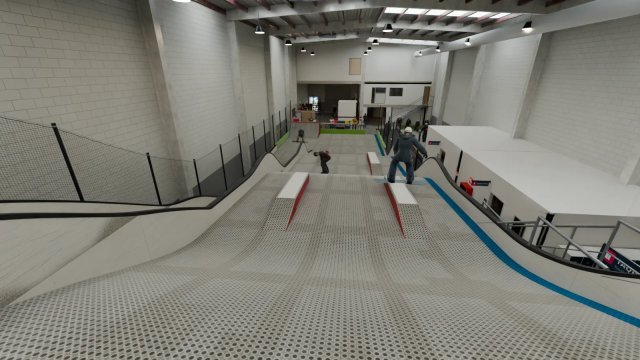
10Zona Hermética (nave tipo B)
Sabadell · 70/100 programa completo
- Planta
- 16,2 × 46,4 m · 752 m²
- Altura libre
- 8,4 m
- Pista
- 3 líneas · 30,4 m · salida a 4,7 m
- Alquiler
- 3.750 €/mes
recepción · alquiler · taquillas · vestuarios · lounge · café
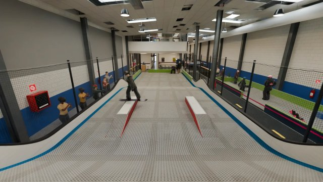
11Molí d’en Bisbe · planta de 663 m²
Montcada i Reixac · 70/100 programa completo
- Planta
- 14,5 × 45,7 m · 663 m²
- Altura libre
- 5,5 m
- Pista
- 2 líneas · 22,9 m · salida a 1,7 m
- Alquiler
- 3.900 €/mes
recepción · alquiler · taquillas · vestuarios · trampolines · lounge · café
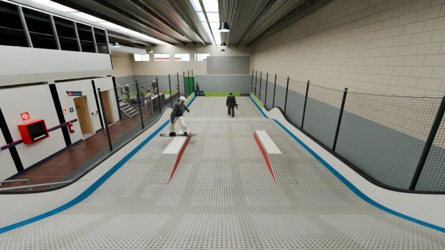
12Marconi 23
Barberà del Vallès · 70/100 programa completo
- Planta
- 14,6 × 32,3 m · 472 m²
- Altura libre
- 5,3 m
- Pista
- 2 líneas · 22,9 m · salida a 2 m
- Alquiler
- 3.910 €/mes
recepción · alquiler · taquillas · vestuarios · lounge
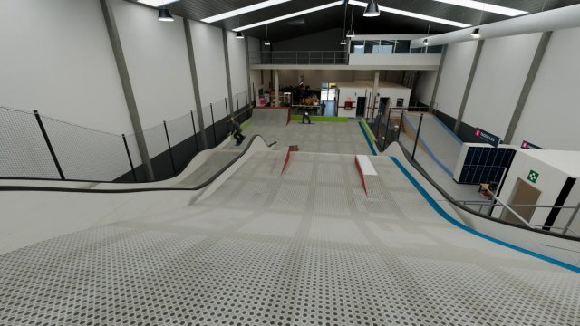
13Sant Joan Despí · INVERTICA
Sant Joan Despí · 70/100 programa completo
- Planta
- 16,6 × 37,0 m · 614 m²
- Altura libre
- 7 m
- Pista
- 3 líneas · 24,6 m · salida a 3,8 m
- Alquiler
- 3.950 €/mes
recepción · alquiler · taquillas · vestuarios · gym · lounge · café
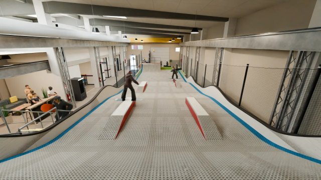
14Compositor Schumann 10
Rubí · 70/100 programa completo
- Planta
- 31,2 × 21,0 m · 579 m²
- Altura libre
- 5,6 m
- Pista
- 2 líneas · 26,6 m · salida a 2,8 m
- Alquiler
- 4.000 €/mes
recepción · alquiler · taquillas · vestuarios · gym · lounge
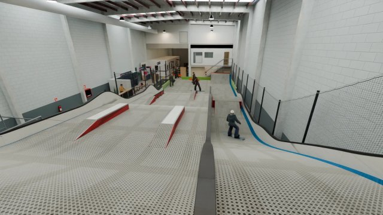
15Can Feu · Masachs
Sabadell · 70/100 programa completo
- Planta
- 14,7 × 44,0 m · 647 m²
- Altura libre
- 7,8 m
- Pista
- 3 líneas · 27,7 m · salida a 3,7 m
- Alquiler
- 4.900 €/mes
recepción · alquiler · taquillas · vestuarios · gym · lounge · café
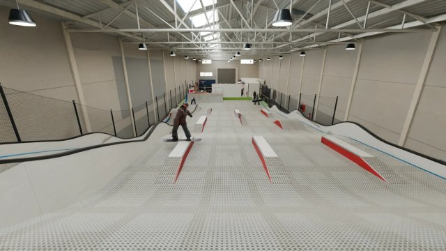
16Polígono Santa Maria
Barberà del Vallès · 70/100 programa completo
- Planta
- 15,8 × 53,6 m · 847 m²
- Altura libre
- 7,2 m
- Pista
- 4 líneas · 34,5 m · salida a 4,2 m
- Alquiler
- 6.000 €/mes
recepción · alquiler · taquillas · vestuarios · gym · lounge · café
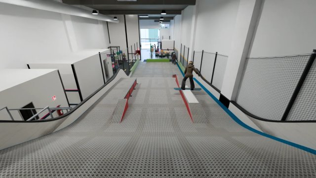
17Granland · nave 15
Badalona · 70/100 programa completo
- Planta
- 11,0 × 39,1 m · 426 m²
- Altura libre
- 6,4 m
- Pista
- 2 líneas · 22,6 m · salida a 3 m
- Alquiler
- 8.500 €/mes
recepción · alquiler · taquillas · vestuarios · gym · lounge
Comparación
| Nave | Altura libre | Líneas | Pista | Salida | Recepción | Alquiler | Taquillas | Vestuarios | Gym | Camas elásticas | Plano | Visita |
|---|---|---|---|---|---|---|---|---|---|---|---|---|
| Montigalà | 7 m | 3 × 3 m | 27,4 m | 3,45 m | ✓ | ✓ | 50 | 2 | ✓ | – | verificado | checklist |
| Abrera · Franklin 3351 | 7 m | 3 × 3,3 m | 36,4 m | 4,2 m | ✓ | ✓ | 50 | 2 | – | – | verificado | checklist |
| Can Masachs | 8,8 m | 3 × 3,15 m | 30,8 m | 4,5 m | ✓ | ✓ | 50 | 2 | – | 2 | verificado | checklist |
| Santa Perpètua | 8 m | 3 × 3,2 m | 38,1 m | 5 m | ✓ | ✓ | 50 | 2 | ✓ | – | verificado | checklist |
| Can Comelles · Premsa 22 | 7,4 m | 3 × 3,1 m | 32,4 m | 4,5 m | ✓ | ✓ | 50 | 2 | – | 1 | verificado | checklist |
| Molí d’en Bisbe · planta de 782 m² | 5,7 m | 3 × 3,1 m | 26,9 m | 2,9 m | ✓ | ✓ | 50 | 2 | ✓ | 2 | verificado | checklist |
| Serra d’en Pons | 4,2 m | 3 × 3,2 m | 28,5 m | 1,4 m | ✓ | ✓ | 50 | 2 | ✓ | – | verificado | checklist |
| Can Palet · Masachs | 6 m | 4 × 3,2 m | 26,9 m | 3,2 m | ✓ | ✓ | 50 | 2 | ✓ | 2 | verificado | checklist |
| Corró d’Avall · planta de 537 m² | 10,6 m | 3 × 3 m | 26,2 m | 3 m | ✓ | ✓ | 50 | 2 | ✓ | – | verificado | checklist |
| Zona Hermética (nave tipo B) | 8,4 m | 3 × 3 m | 30,4 m | 4,7 m | ✓ | ✓ | 50 | 2 | – | – | verificado | checklist |
| Molí d’en Bisbe · planta de 663 m² | 5,5 m | 2 × 3,3 m | 22,9 m | 1,7 m | ✓ | ✓ | 50 | 2 | – | 2 | verificado | checklist |
| Marconi 23 | 5,3 m | 2 × 3,2 m | 22,9 m | 2 m | ✓ | ✓ | 50 | 2 | – | – | verificado | checklist |
| Sant Joan Despí · INVERTICA | 7 m | 3 × 3,3 m | 24,6 m | 3,8 m | ✓ | ✓ | 50 | 2 | ✓ | – | verificado | checklist |
| Compositor Schumann 10 | 5,6 m | 2 × 3,3 m | 26,6 m | 2,8 m | ✓ | ✓ | 50 | 2 | ✓ | – | verificado | checklist |
| Can Feu · Masachs | 7,8 m | 3 × 3 m | 27,7 m | 3,7 m | ✓ | ✓ | 52 | 2 | ✓ | – | verificado | checklist |
| Polígono Santa Maria | 7,2 m | 4 × 3,12 m | 34,5 m | 4,2 m | ✓ | ✓ | 50 | 2 | ✓ | – | verificado | checklist |
| Granland · nave 15 | 6,4 m | 2 × 3 m | 22,6 m | 3 m | ✓ | ✓ | 51 | 2 | ✓ | – | verificado | checklist |
«Verificado»: plano rehecho a partir del anuncio, las fotos y los planos publicados, cotejados entre sí; cada cota lleva su fuente en la ficha del simulador. «Boceto»: versión preliminar convertida del ranking anterior, a la espera de su revisión.